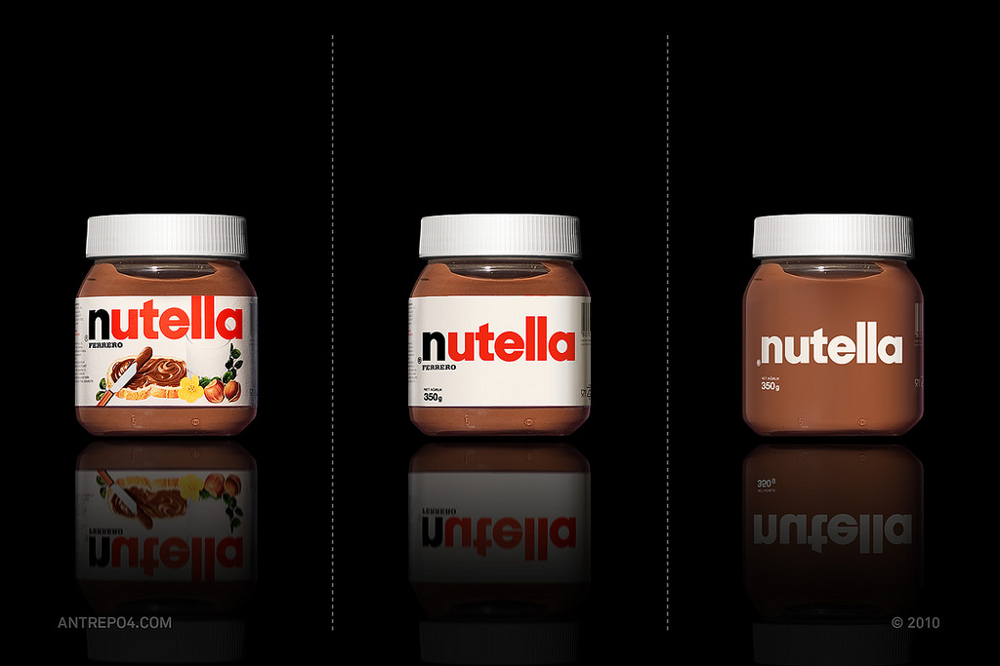

Minimal Branding in a Maximum Market
Multi-disciplinary design consultancy Antrepo took on the challenge of stripping down various brands to a minimalistic state to strengthen the brand by removing the noise. For each product they took it through two steps to simplify and then simplify more. This fun challenge is more or less the reverse of the Microsoft iPod packaging spoof video. See the entire project on Antrepo’s blog A2591.
Found on The Fox Is Black